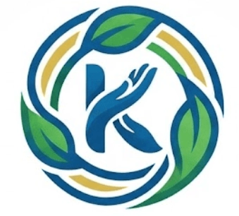
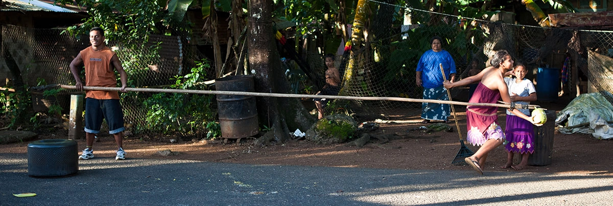

Unity
Bringing community members together across island shores and distant countries, maintaining strong family ties and collective identity.


Preserving our heritage, uniting our families, and sharing our story with the world.
The Kapinga Community Hub exists to build a bridge across islands and oceans. Our mission is to preserve the rich cultural heritage of the Kapingamarangi people, empower our members through open communication, and support community development both locally and across the global diaspora.
We envision a thriving, interconnected community where every generation—regardless of where they live—remains rooted in our ancestral wisdom, values, and language.
Originating from the secluded Polynesian outlier atoll of Kapingamarangi in Micronesia, our people have maintained a distinct linguistic and cultural identity for centuries. Shaped by deep ocean navigation, traditional backstrap loom weaving, and reliance on island resources, our ancestors cultivated a resilient community centered around mutual reliance.
As community members expanded to Pohnpei and locations around the world, preserving our living history became essential. This digital platform serves as a central archive and gathering point to celebrate our seafaring legacy, document oral histories, and keep our storytelling tradition vibrant for future generations.
Bringing community members together across island shores and distant countries, maintaining strong family ties and collective identity.
Keeping our traditional language (Kirinit), traditional arts, weaving, and seafaring customs active and celebrated across all generations.
Fostering a network of care, mutual help (ti-angai), and active communication to assist and empower all community members.
Whether you are a community member looking for upcoming gatherings or a visitor interested in our living history, we invite you to participate!